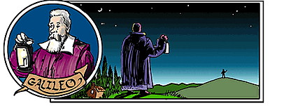
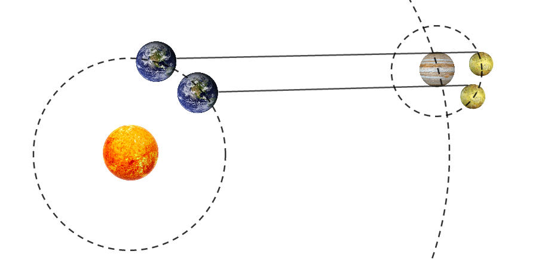
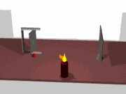
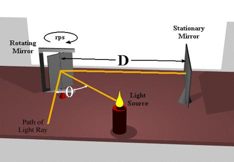
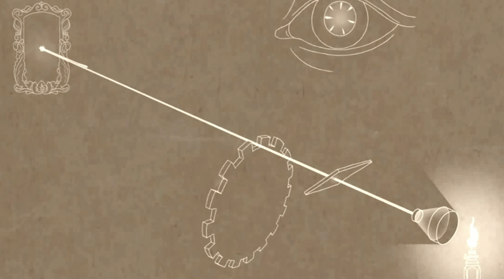

Aula12-90: Éter luminífero e a velocidade da luz
Christiaan Huygens (★ 1629 — 1695 ✝), no seu livro Tratado sobre a luz, propõe que a natureza da luz é ondulatória e sugere que, do mesmo modo como o som necessita de um meio para se propagar, a luz também precisaria de um meio; esse meio seria o éter luminífero.
Isaac Newton (★ 1642 — 1727 ✝), no seu livro Óptica, propõe que a natureza da luz é corpuscular, opondo-se à hipótese ondulatória de Huygens. Como Newton foi o maior gênio científico do período clássico da física, seu prestígio garantiu que sua hipótese se sobrepusesse à de Huygens.
Em 1801, o físico inglês Thomas Young (★ 1773 — 1829 ✝) realizou o experimento da dupla fenda e observou que a luz proveniente de uma fonte era capaz de interferir com a luz proveniente de outra fonte. Por ser esse comportamento algo característico de ondas, o modelo ondulatório de Huygens foi recuperado e, juntamente com ele, a ideia do éter luminífero.
A velocidade da luz segundo Maxwell
Em 1861, o físico escocês James Clerk Maxwell (★ 1831 — 1879 ✝) publicou um artigo intitulado Sobre as linhas físicas de força, no qual apresentava uma série de equações que descreviam toda a teoria eletromagnética. Para deduzir essas equações, Maxwell lançou mão do conceito de éter luminífero e constatou que a velocidade da luz no vácuo deveria ser de:
Em que:
◦ é a constante de permissividade elétrica do vácuo
◦ é a constante de permeabilidade magnética do vácuo
Os experimentos comprovam os cálculos de Maxwell
➔ EXPERIMENTO DO MONTE (séc. XVII)
Por volta do ano de 1600, Galileu Galilei (★ 1564 — 1642 ✝) propôs um experimento que pretendia medir a velocidade de propagação da luz no ar. Nele, Galileu e um ajudante se posicionariam sobre dois montes distantes 2 km um do outro. A ideia era a seguinte: Galileu acendia o seu candelabro e a luz viajava até chegar aos olhos do seu auxiliar; nesse momento, o auxiliar acendia o próprio candelabro e a luz viajava de volta até o monte de Galileu, que media o tempo gasto pela luz para percorrer esse caminho. De posse da distância (ida e volta, 4 km) e do tempo, Galileu seria capaz de determinar a velocidade da luz.
Os resultados obtidos pelo cientista foram inconclusivos, uma vez que o tempo observado era tão ínfimo que impedia a sua marcação: a propagação parecia ser instantânea, impossível de se medir com a tecnologia de que ele dispunha. Após o experimento, Galileu sabia que ou a luz viaja numa velocidade muitíssimo grande, ou então sua propagação é instantânea.

➔ EXPERIMENTO DA LUZ DE IO (1676)
Em 1676, o astrônomo dinamarquês Ole Rømer (★ 1644 — 1710 ✝) percebeu que os eclipses do satélite Io, de Júpiter, não apresentavam períodos iguais. Rømer concluiu então que essa diferença temporal se devia a um afastamento ou a uma aproximação da Terra (ponto de observação do fenômeno) em relação a Júpiter. Por exemplo: como a Terra se afasta enquanto o satélite se encontra eclipsado por Júpiter, quando ele reaparece ao lado do planeta estará mais distante da Terra e, aqui, o veremos com um atraso, devido ao espaço maior que a luz teve de percorrer. Como o período orbital de Io já era bem conhecido, o astrônomo realizou os cálculos e chegou ao seguinte valor para a velocidade de propagação da luz:

➔ EXPERIMENTO DO ESPELHO GIRANTE (1850)
Em 1850, o físico francês Jean Bernard Léon Foucault (★ 1819 — 1868 ✝) propôs um experimento para determinar a velocidade da luz. Uma fonte de luz emitia um feixe luminoso contra um espelho girante. A luz era refletida nesse espelho girante e seguia em direção a um espelho refletor estacionário; lá era novamente refletida de volta ao primeiro espelho, que já se encontrava deslocado em um certo ângulo. Conhecendo-se a diferença angular entre o feixe emitido e o refletido e o período de rotação da placa refletida, é possível, através da cinemática e das leis da reflexão, determinar a velocidade de propagação da luz.
O experimento foi bem-sucedido e levou Foucault a uma velocidade apenas 0,6% menor que a atualmente aceita para a luz.
|
 |
 |
➔ EXPERIMENTO DA RODA DENTADA (1851)
Em 1851, Hippolyte Fizeau (★ 1819 — 1896 ✝) propôs um novo experimento para se medir a velocidade da luz. Uma fonte de luz emitia luz ininterruptamente em direção a um espelho que ficava atrás de uma roda dentada. Essa roda era então acelerada até que os feixes refletidos fossem barrados pelo dente seguinte da roda. Sabendo-se o período de rotação da roda e a distância entre a roda e o espelho, era possível medir a velocidade da luz.
O experimento foi bem-sucedido e forneceu valores muito próximos do atualmente aceito.
